ลองทำงานจริงใน LexiQuest
ตรวจจากจุดเริ่ม ผลที่ต้องเห็น และหน้าที่ผู้เรียนควรกลับถึง
44 ฟีเจอร์ที่ให้ลอง
แต่ละข้อใช้เส้นทางตัวอย่างหนึ่งงาน ช่องท้ายอธิบายขอบเขตที่ต้นแบบพิสูจน์ได้
f01 · เลือกชุดเรียนตามระดับ
เลือกระดับ A2 แล้วหาชุดคำที่ใช้เดินทาง
เริ่ม คลังคำศัพท์ → เลือกชุดคำศัพท์ → เลือกตามระดับหรือสิ่งที่อยากฝึก → ระดับภาษา → A2 → การเดินทาง → ย้อนกลับ → ล้างตัวกรอง → กลับคลังคำ
เห็น “ระดับภาษา · A2 · พบ 1 ชุด” · จบที่ คลังคำศัพท์
มีชุดตัวอย่างสองชุดและตัวกรองทีละเงื่อนไข
f02 · ดูรายละเอียดชุดเรียน
ตรวจเนื้อหาชุดครัวแล้วทบทวนครบสองคำ
เริ่ม คลังคำศัพท์ → เลือกชุดคำศัพท์ → ของใช้ในครัว → คำศัพท์ในชุด → กลับไปดูชุดเรียน → เลือกวิธีฝึก → ทบทวนด้วยบัตรคำ → เปิดคำแปล → ทบทวนคำถัดไป → เปิดคำแปล → จบการทบทวน → กลับไปดูชุดที่เพิ่งฝึก → เลือกชุดอื่น → กลับคลังคำ
เห็น “เปิดทบทวนแล้ว 2 จาก 2 คำ” · จบที่ คลังคำศัพท์
ความคืบหน้าเป็นผลของรอบตัวอย่างภายในต้นแบบ
f03 · ดูบัตรคำแบบละเอียด
เปิดบัตร station แล้วเทียบกับคำว่า stop
เริ่ม คลังคำศัพท์ → เปิดชุดการเดินทาง → station → ดูระดับคำและคำใกล้เคียง → ย้อนกลับ → ย้อนกลับ → กลับคลังคำ
เห็น “stop · จุดจอด” · จบที่ คลังคำศัพท์
แสดงระดับของชุดและคำใกล้เคียงตามบริบท เสียงและระดับคำที่บรรณาธิการรับรองต้องตรวจในแอป
f04 · ตรวจที่มาและคุณภาพเนื้อหา
ตรวจว่าเนื้อหาชุดครัวเป็นฉบับใด
เริ่ม คลังคำศัพท์ → เลือกชุดคำศัพท์ → ของใช้ในครัว → ที่มาของชุดเรียน → กลับไปดูชุดเรียน → ดูชุดเรียนทั้งหมด → กลับคลังคำ
เห็น “ร่างตัวอย่าง ยังไม่เผยแพร่ให้ผู้เรียน” · จบที่ คลังคำศัพท์
รหัสตรวจสอบมาจากรายการคำตัวอย่าง การเผยแพร่และตรวจความถูกต้องของชุดจริงเป็นงานระบบ
f05 · ใช้หน้าฝึกร่วม
พักรอบสองคำแล้วทำข้อเดิมต่อจนเห็นผล
เริ่ม ฝึกภาษา → ฝึกจากชุดคำ → ลองฝึกทั้งชุด → สถานี → ไปข้อถัดไป → พักรอบนี้ → ทำข้อที่สองต่อ → ชานชาลา → ดูผลการฝึก → กลับไปเลือกแบบฝึก
เห็น “2 / 2” · จบที่ เลือกชุดคำ
ตรวจจุดพักและผลรวมในรอบ การกู้รอบหลังปิดแอป เวลา และสัญญาเชื่อมแต่ละโหมดต้องตรวจใน Flutter
f06 · นึกคำจากบัตรและประเมินตนเอง
นึกคำจากบัตรแล้วประเมินว่าจำได้
เริ่ม ฝึกภาษา → ทบทวนคำนี้ → ดูคำแปล → จำได้แล้ว → กลับหน้าฝึกภาษา
เห็น “ที่คุณจำความหมายได้” · จบที่ ฝึกภาษา
ผลเป็นการประเมินของผู้เรียน การคำนวณกำหนดทบทวนถัดไปอยู่ใน SRS
f07 · เลือกความหมายของคำ
เลือกคำอังกฤษจากความหมายแล้วแก้คำที่สับสน
เริ่ม ฝึกภาษา → ฝึกจากชุดคำ → เลือกรูปแบบโจทย์ → เลือกคำอังกฤษจากความหมายไทย → station → กลับไปเลือกคำตอบ → platform → เลือกรูปแบบโจทย์อื่น
เห็น “platform · ชานชาลา” · จบที่ เลือกรูปแบบโจทย์
เส้นทางนี้ทดสอบไทยไปอังกฤษ อีกทิศใช้โจทย์เลือกคำแปลบนหน้าเลือกชุด
f08 · อ่านนิยามแล้วเลือกคำ
อ่านนิยามแล้วแยก platform ออกจาก ticket
เริ่ม ฝึกภาษา → ฝึกจากชุดคำ → เลือกรูปแบบโจทย์ → อ่านนิยามแล้วหาคำ → ticket → ลองข้อเดิม → platform → เลือกแบบฝึกอื่น
เห็น “คุณเลือก platform” · จบที่ เลือกรูปแบบโจทย์
เป็นโจทย์นิยามหนึ่งข้อ การให้น้ำหนักหลักฐานยังต้องทดสอบกับระบบฝึก
f09 · เติมคำในบริบท
เติมคำในประโยคหลังสับสนระหว่างสถานีกับชานชาลา
เริ่ม ฝึกภาษา → ฝึกจากชุดคำ → การเดินทาง → สถานี → ดูผลการฝึก → ฝึกคำนี้อีกครั้ง → ticket → ลองตอบอีกครั้ง → platform → กลับหน้าฝึกภาษา
เห็น “The train is at platform two.” · จบที่ ฝึกภาษา
กรณีนี้เลือกคำเติมช่องว่าง การพิมพ์คำเองต้องใช้เกณฑ์ตรวจต่างกัน
f10 · จับคู่คำกับความหมาย
แก้คู่คำที่จับผิดแล้วจับให้ครบทั้งสองคู่
เริ่ม ฝึกภาษา → ฝึกจากชุดคำ → เลือกรูปแบบโจทย์ → จับคู่คำกับความหมาย → station → ตั๋ว → ลองเลือกคำแปลอีกครั้ง → สถานี → ตั๋ว → เลือกแบบฝึกอื่น
เห็น “2 / 2” · จบที่ เลือกรูปแบบโจทย์
จำนวนคู่ที่ทำสำเร็จแสดงการจำได้จากตัวเลือก
f11 · พิมพ์คำตอบจากความจำ
ปิดบทอ่าน สะกดคำแล้วนำไปใช้ในประโยคใหม่
เริ่ม ฝึกภาษา → ดูแบบฝึกทั้งหมด → ฝึกจากข้อความของฉัน → ใช้ข้อความนี้ฝึก → อ่านแล้วลองนึกคำ → ลองอ่านโดยไม่ดูคำแปล → ปิดบทอ่านแล้วลองนึกคำ → เติมตัว s → เติมตัว t → เติมตัว a → เติมตัว t → เติมตัว i → เติมตัว o → เติมตัว n → ตรวจคำตอบ → ลองใช้ในประโยค → ดูผลการฝึก → ฝึกคำจากข้อความต่อ
เห็น “I live near the station.” · จบที่ ฝึกคำจากข้อความนี้
แตะตัวอักษรบนกระดานจำลองได้ การพิมพ์อิสระและคงร่างหลังปิดแอปต้องลองกับแป้นพิมพ์จริง
f12 · เขียนคำด้วยลายมือ
เขียน ticket ย้อนหนึ่งจังหวะ แล้วตรวจคำด้วยตัวเอง
เริ่ม ฝึกภาษา → ฝึกจากชุดคำ → เลือกรูปแบบโจทย์ → กระดานฝึกเขียน → ดูตัวอย่างการเขียน → เขียนต่อให้จบคำ → ย้อนรอยเขียนล่าสุด → เขียนต่อให้จบคำ → เทียบกับคำเฉลย → ฉันสะกดตรงกับเฉลย → เลือกรูปแบบโจทย์อื่น
เห็น “คุณประเมินว่าตรงกับเฉลย” · จบที่ เลือกรูปแบบโจทย์
รอยปากกาเป็นตัวอย่างที่กดดูได้ แอปต้องรองรับลากเขียนจริงและล้างรอยหลังออก
f13 · รวมแบบฝึกเดิมเข้าวงจรเดียว
ฝึกเขียนตามเสียงจากชุดคำในข้อความแล้วกลับข้อความเดิม
เริ่ม ฝึกภาษา → ดูแบบฝึกทั้งหมด → ฝึกจากข้อความของฉัน → ใช้ข้อความนี้ฝึก → ฟังแล้วเขียน → ดูตัวอย่างการฟัง → ฟังช้าลง → ลองเขียนคำที่ได้ยิน → ตรวจคำตอบ → กลับไปฝึกคำจากข้อความ
เห็น “สะกดถูกแล้ว” · จบที่ ฝึกคำจากข้อความนี้
ตัวอย่างการจบรอบเขียนตามเสียงหนึ่งโหมด การใช้ตัวบันทึกร่วมของทั้งหกโหมดต้องตรวจใน Flutter
f14 · แนะนำการทบทวนด้วยบัตรก่อน
เลือกทบทวนคำที่ถึงกำหนดก่อนลองใช้ในประโยค
เริ่ม ฝึกภาษา → ทบทวนคำนี้ → ดูคำแปล → ยังจำไม่ได้ → ลองเติมคำนี้ในประโยค → platform → กลับหน้าฝึกภาษา
เห็น “รถไฟจอดอยู่ที่ชานชาลาสอง” · จบที่ ฝึกภาษา
ตัวอย่างมีคำถึงกำหนดหนึ่งคำ ผู้เรียนเลือกชุดหรือวิธีฝึกอื่นจากหน้าฝึกภาษาได้
f15 · เพิ่มระดับการนึกคำ
เลือกความหมายด้วยตัวเองแล้วก้าวไปนึกคำโดยไม่มีตัวเลือก
เริ่ม คลังคำศัพท์ → ทบทวนคำศัพท์ → ฝึกให้จำได้ด้วยตัวเอง → ลองเลือกความหมาย → ชานชาลา → ลองเลือกความหมายอีกครั้ง → สถานี → ลองนึกคำโดยไม่มีตัวเลือก → ตรวจคำตอบ → กลับไปเลือกสิ่งที่จะทบทวน
เห็น “คุณเลือกความหมายได้ก่อนนึกคำจากประโยค” · จบที่ เลือกสิ่งที่จะทบทวน
แสดงสองขั้นที่เปลี่ยนตามคำตอบ การปรับครบเจ็ดโหมดต้องตรวจด้วยประวัติการเรียนจริง
f16 · ตั้งค่ารอบฝึก
ตั้งรอบหนึ่งคำให้อ่านเองโดยไม่จับเวลา แล้วฝึกจนจบ
เริ่ม ฝึกภาษา → ฝึกจากชุดคำ → ตั้งค่าก่อนฝึก → ฝึกแบบอ่านเอง → ฝึกตามจังหวะของฉัน → ชานชาลา → กลับไปเลือกชุดคำ
เห็น “1 จาก 1 · ไม่จับเวลา” · จบที่ เลือกชุดคำ
มีชุดตัวอย่าง 1 และ 2 คำ พร้อมตัวเลือกเสียงและเวลา การใช้ค่ากับทุกรูปแบบต้องตรวจในแอป
f17 · ดูผลตอบกลับทันที
บันทึกคำตอบเดิมอีกครั้งหลังบันทึกไม่สำเร็จ
เริ่ม ฝึกภาษา → ฝึกจากชุดคำ → ตั้งค่าก่อนฝึก → ฝึกต่อเมื่อบันทึกไม่ได้ → ชานชาลา → บันทึกคำตอบเดิมอีกครั้ง → กลับไปเลือกชุดคำ
เห็น “บันทึกคำตอบแล้ว · 1 จาก 1” · จบที่ เลือกชุดคำ
จำลองการเขียนล้มเหลวและสำเร็จ ต้องทดสอบกับที่เก็บข้อมูลว่าการลองใหม่ไม่เพิ่มคะแนนซ้ำ
f18 · เข้าใจเหตุผลที่ตัวลวงผิด
เทียบคำที่เลือกผิดกับความหมายของ platform แล้วดูผล
เริ่ม ฝึกภาษา → ฝึกจากชุดคำ → การเดินทาง → สถานี → ดูผลการฝึก → กลับหน้าฝึกภาษา
เห็น “station คือ สถานี” · จบที่ ฝึกภาษา
เปรียบเทียบตัวลวงที่เลือกในหนึ่งข้อ ตัวลวงทุกคำต้องตรวจจากชุดเนื้อหาจริง
f19 · เปิดคำใบ้และตัวอย่างประโยค
ดูคำใบ้จากประโยคแล้วเขียนคำว่า station
เริ่ม คลังคำศัพท์ → เปิดชุดการเดินทาง → station → ฝึกฟังแล้วเขียน → ตอนนี้ฟังเสียงไม่ได้ → ลองเขียนคำ → ตรวจคำตอบ → กลับไปดูคำเดิม
เห็น “Meet me at the ____.” · จบที่ station
ต้นแบบใช้คำตอบที่เตรียมไว้ การพิมพ์อิสระและเสียงจริงต้องตรวจบนอุปกรณ์
f20 · เก็บคำหรือข้อไว้ทบทวนภายหลัง
เก็บคำไว้อ่านระหว่างออฟไลน์แล้วนำออกจากรายการ
เริ่ม คลังคำศัพท์ → เปิดชุดการเดินทาง → station → จัดการคำนี้ → เก็บไว้อ่านอีกครั้ง → นำ station ออกจากรายการ → กลับไปดูคำว่า station
เห็น “นำ station ออกจากรายการแล้ว” · จบที่ station
รายการเป็นตัวอย่างบนเครื่อง ยังไม่ตรวจการคงข้อมูลเมื่อเปลี่ยนบัญชีหรือเปิดแอปใหม่
f21 · รายงานปัญหาเนื้อหา
แจ้งว่าประโยคสะกดผิดและตรวจรายงานที่รอส่ง
เริ่ม คลังคำศัพท์ → เลือกชุดคำศัพท์ → การเดินทาง → ที่มาของชุดเรียน → แจ้งคำแปลไม่ตรง → คำแปลไม่ตรงกับประโยค → ประโยคตัวอย่างสะกดผิด → เก็บรายงานไว้ส่งเมื่อออนไลน์ → กลับไปที่คลังคำ
เห็น “ประโยคตัวอย่างสะกดผิด” · จบที่ คลังคำศัพท์
ต้นแบบแสดงรายงานในคิวออฟไลน์ การส่งและรับรายงานจากผู้จัดทำต้องทดสอบที่ระบบ
f22 · เปิดศูนย์ทบทวน
เปิดศูนย์ทบทวนแล้วดูรายงานที่ยังรอส่ง
เริ่ม คลังคำศัพท์ → ทบทวนคำศัพท์ → รายงานที่รอส่ง → กลับศูนย์ทบทวน → กลับคลังคำ
เห็น “ยังไม่ส่งถึงผู้จัดทำ” · จบที่ คลังคำศัพท์
ใช้รายการรายงานตัวอย่าง การอ่านคำถึงกำหนด ข้อผิด คำที่เก็บ และรายงานของผู้ใช้จริงอยู่ขั้นแอป
f23 · ตั้งเวลาฝึกสมาธิ
ตั้งเวลาห้านาที พัก แล้วจบรอบหลังกลับมาฝึกต่อ
เริ่ม ความก้าวหน้า → วางแผนการฝึก → จับเวลาฝึก → ฝึก 5 นาที → พักการจับเวลา → ฝึกต่ออีกหนึ่งนาที → จบรอบและดูเวลา → เริ่มรอบใหม่ → กลับไปแผนฝึก
เห็น “คงเหลือเท่าเดิม” · จบที่ แผนฝึกของฉัน
ต้นแบบเปลี่ยนสถานะเวลาเป็นช่วง ไม่ได้จับเวลาจริง
f24 · ดูเวลาเรียนที่ระบบบันทึก
ตรวจว่าเวลาฝึกสองนาทีหักช่วงพักสามนาทีแล้ว
เริ่ม ความก้าวหน้า → วางแผนการฝึก → จับเวลาฝึก → ฝึก 5 นาที → พักการจับเวลา → ฝึกต่ออีกหนึ่งนาที → จบรอบและดูเวลา → ดูสัปดาห์ของฉัน → กลับไปดูความก้าวหน้า
เห็น “หักออก 3 นาที” · จบที่ ความก้าวหน้า
เวลาและเหตุการณ์ออกจากแอปเป็นข้อมูลสมมติ ต้องวัดจากวงจรชีวิตแอปจริง
f25 · ดูปฏิทินและรายสัปดาห์
เลือกวันพฤหัสบดีเพื่อดูเวลาและผลของวันนั้น
เริ่ม ความก้าวหน้า → วางแผนการฝึก → สัปดาห์นี้ฝึกเมื่อไรบ้าง → พฤหัสบดี 12 พ.ย. → กลับไปดูทั้งสัปดาห์ → กลับไปดูความก้าวหน้า
เห็น “ตอบถูก 5 จาก 6 ข้อ” · จบที่ ความก้าวหน้า
ปฏิทินตัวอย่างมีผลสามวันในหนึ่งสัปดาห์ ยังไม่ทดสอบการรวมผลข้ามเขตเวลา
f26 · ตั้งเป้าหมายและนับถอยหลัง
เลื่อนวันเป้าหมายจากหนึ่งเป็นสองสัปดาห์แล้วปิดเป้าหมาย
เริ่ม ความก้าวหน้า → วางแผนการฝึก → ตั้งวันเป้าหมาย → 20 พฤศจิกายน · อีก 7 วัน → แก้วันเป้าหมาย → 27 พฤศจิกายน · อีก 14 วัน → ปิดเป้าหมายนี้ → กลับไปแผนฝึก
เห็น “14 วัน” · จบที่ แผนฝึกของฉัน
นับถอยหลังจากวันที่ตัวอย่าง 13 พฤศจิกายน การเปลี่ยนวันตามนาฬิกาจริงต้องทดสอบในแอป
f27 · สมัครรับการเตือนฝึก
เปิดเตือนเฉพาะเย็นวันธรรมดาแล้วปิดการเตือน
เริ่ม ความก้าวหน้า → วางแผนการฝึก → เตือนให้กลับมาฝึก → จันทร์ถึงศุกร์ เวลา 19:00 น. → อนุญาตให้เตือน → ปิดการเตือน → กลับไปแผนฝึก
เห็น “จันทร์ถึงศุกร์ 19:00 น.” · จบที่ แผนฝึกของฉัน
ใช้หน้าสิทธิ์และกำหนดการตัวอย่าง ไม่มีการตั้งเวลาส่งการแจ้งเตือนจริง
f28 · เปรียบเทียบผลประเมินก่อนและหลัง
เปิดหลักฐานรายคำของผลก่อนและหลังฝึก แล้วกลับตัวเลือกงานวิจัย
เริ่ม บัญชี → ตั้งค่า → การเข้าร่วมวิจัย → เปรียบเทียบสองรอบ → ดูคำตอบที่ใช้เปรียบเทียบ → กลับไปดูผลเปรียบเทียบ → กลับไปดูตัวเลือกงานวิจัย → เรียนต่อ
เห็น “หลังฝึก ตอบว่าชานชาลา” · จบที่ ฝึกภาษา
เป็นการอ่านข้อมูลสมมติ ไม่มีข้อมูลผู้เข้าร่วม การวัดจริงต้องยืนยันแบบวัด สิทธิ์ และการจับคู่รอบ
f29 · ทำภารกิจตามหลักฐานการฝึก
ทำข้อสุดท้ายของภารกิจและกลับมาดูว่าได้รับแต้มแล้ว
เริ่ม ความก้าวหน้า → วางแผนการฝึก → ภารกิจและเพื่อนฝึก → ภารกิจประจำวัน → ฝึกข้อที่เหลือ → สถานี → ลองตอบอีกครั้ง → ชานชาลา → รับแต้มภารกิจ → กลับไปดูภารกิจ
เห็น “ครบ 5 ข้อ · รับ 50 แต้มแล้ว” · จบที่ ภารกิจและเพื่อนฝึก
ใช้เงื่อนไขภารกิจตอบถูกห้าข้อตามซอร์ส การป้องกันการให้รางวัลซ้ำต้องทดสอบกับตัวบันทึกจริง
f30 · ติดตามวันที่ฝึกต่อเนื่อง
ดูวันที่กลับมาฝึกหลังวันพักแล้วเปิดสัปดาห์เดิม
เริ่ม ความก้าวหน้า → วางแผนการฝึก → ภารกิจและเพื่อนฝึก → วันที่ได้กลับมาฝึก → ดูสัปดาห์นี้ → พฤหัสบดี 12 พ.ย. → กลับไปดูทั้งสัปดาห์ → กลับไปดูความก้าวหน้า
เห็น “เว้นไปหนึ่งวันก็เริ่มฝึกต่อได้” · จบที่ ความก้าวหน้า
ใช้ประวัติตัวอย่างหนึ่งสัปดาห์ การตัดวันและนับช่วงต่อเนื่องอยู่ที่ข้อมูลจริง
f31 · ดูความสำเร็จและเงื่อนไข
ดูวันที่ได้รับตราและเงื่อนไขของตราถัดไป
เริ่ม ความก้าวหน้า → ของสะสม → ดูวันที่ได้รับและเงื่อนไข → ย้อนกลับ
เห็น “10 พฤศจิกายน · จบรอบแรก” · จบที่ ของสะสม
ใช้วันเวลาและประวัติฝึกตัวอย่าง วันที่จริงต้องมาจากเหตุการณ์ปลดล็อก
f32 · ลองและสวมของตกแต่ง
ลองธีมมหาสมุทร ตรวจราคา แลกแล้วเปิดใช้
เริ่ม บัญชี → ของสะสม → ไปที่ร้านของตกแต่ง → ลองธีมมหาสมุทร · 80 เหรียญ → ดูยอดก่อนแลก → ยืนยันแลก 80 เหรียญ → ใช้ธีมนี้ → กลับไปที่ร้าน → กลับไปดูของสะสม
เห็น “ธีมมหาสมุทร · กำลังใช้” · จบที่ ของสะสม
ยอดเหรียญและการซื้อเป็นตัวอย่าง ต้องตรวจการเขียนซ้ำและการเปลี่ยนเจ้าของในแอป
f33 · พบผู้ช่วยประจำตัวตามเหตุการณ์เรียน
อ่านคำใบ้จากเพื่อนฝึกหลังจำคำไม่ได้ แล้วลองใหม่
เริ่ม ฝึกภาษา → ทบทวนคำนี้ → ดูคำแปล → ยังจำไม่ได้ → ดูคำใบ้จากเพื่อนฝึก → ลองทบทวนคำนี้อีกครั้ง → ดูคำแปล → จำได้แล้ว → กลับหน้าฝึกภาษา
เห็น “คุณเพิ่งเลือกว่ายังจำคำนี้ไม่ได้” · จบที่ ฝึกภาษา
เพื่อนฝึกตอบเหตุการณ์ที่กำหนดไว้ รูปและคำใบ้หยุดนิ่งให้อ่านจนจบ
f34 · สร้างการ์ดแบ่งปันความสำเร็จ
ซ่อนวันที่บนการ์ด ดูภาพก่อนแชร์ แล้วกลับไปที่ภารกิจ
เริ่ม ความก้าวหน้า → วางแผนการฝึก → ภารกิจและเพื่อนฝึก → การ์ดสิ่งที่ทำสำเร็จ → ซ่อนวันที่ฝึก → ดูตัวอย่างการแชร์ → จบการดูตัวอย่าง
เห็น “ซ่อนวันที่ฝึกแล้ว” · จบที่ ภารกิจและเพื่อนฝึก
แสดงภาพก่อนส่งและยกเลิกได้ การบันทึกไฟล์และเลือกแอปปลายทางต้องตรวจบนอุปกรณ์
f35 · เลือกเป้าหมายและวิธีฝึกตอนเริ่ม
ตั้งเป้าหมายครั้งแรก เลือกอ่านเรื่องเดินทาง แล้วเริ่มบทเรียน
เริ่ม บัญชี → เข้าสู่ระบบหรือสร้างบัญชี → เข้าสู่ระบบด้วยบัญชีตัวอย่าง → ตั้งวิธีเรียนครั้งแรก → เวลาเดินทาง · ฟังประกาศและอ่านป้าย → ประมาณ 5 นาทีต่อครั้ง → อ่านเรื่องสั้นจากชีวิตประจำวัน → ลองฝึกแบบนี้ → ย้อนกลับ
เห็น “Her friend is on platform two.” · จบที่ วิธีเรียนที่เลือก
ใช้บัญชีและเป้าหมายตัวอย่าง ผู้เรียนกดข้ามคำถามเพื่อเลือกชุดคำเองได้
f36 · แก้โปรไฟล์สำหรับปรับการเรียน
เปลี่ยนวิธีฝึกแล้วเปิดโปรไฟล์ซ้ำเพื่อตรวจค่า
เริ่ม ความก้าวหน้า → วางแผนการฝึก → ปรับวิธีเรียน → โปรไฟล์การเรียน → วิธีที่อยากฝึก → ฟังเสียงแล้วลองพูดตาม → ใช้วิธีนี้กับโปรไฟล์ → กลับไปปรับวิธีเรียน → โปรไฟล์การเรียน → กลับไปปรับวิธีเรียน
เห็น “วิธีที่เลือก · ฟังแล้วพูดตาม” · จบที่ ปรับวิธีเรียน
การเปลี่ยนแสดงในโปรไฟล์ตัวอย่าง ต้องตรวจการคงค่าหลังปิดแอป
f37 · เลือกรับคำแนะนำฝึกต่อ
ใช้คำแนะนำหลังตอบผิดแล้วลองใช้คำเดิมในประโยคใหม่
เริ่ม ฝึกภาษา → ฝึกจากชุดคำ → การเดินทาง → สถานี → ดูผลการฝึก → ดูคำที่ยังสับสน → ลองเติมคำนี้ในประโยค → platform → กลับหน้าฝึกภาษา
เห็น “The train is at platform two.” · จบที่ ฝึกภาษา
แนะนำจากข้อผิดในสถานการณ์นี้ การจัดลำดับจากประวัติผู้เรียนหลายรอบต้องทดสอบกับข้อมูลในแอป
f38 · เข้าถึงงานด้วยวิธีที่เหมาะกับผู้เรียน
อ่านบัตรตัวใหญ่แบบไม่จับเวลาแล้วเปิดความหมาย
เริ่ม บัญชี → ตั้งค่า → การแสดงผล → ข้อความและวิธีตอบ → ข้อความขนาดใหญ่ → เปิดความหมาย → กลับไปปรับการอ่าน → สีของหน้าจอ
เห็น “ชานชาลา” · จบที่ การแสดงผล
ตัวอย่างนี้ใช้ข้อความแทนสีและให้เปิดเฉลยเอง การขยายตามระบบ 200% กับ TalkBack ต้องตรวจบนอุปกรณ์
f39 · ปรับธีมและการเคลื่อนไหว
เลือกสีตามเครื่องและลดการเคลื่อนไหว ดูบัตรก่อนกลับ
เริ่ม บัญชี → ตั้งค่า → การแสดงผล → สีตามอุปกรณ์และภาพเคลื่อนไหว → ลดการเคลื่อนไหว → ใช้การตั้งค่านี้ → กลับไปที่ตั้งค่า
เห็น “ตามอุปกรณ์ · ลดการเคลื่อนไหวแล้ว” · จบที่ ตั้งค่า
ภาพตัวอย่างใช้ค่าระบบแบบสว่าง ต้องตรวจการสลับสีตามเครื่องและการคงค่าจริง
f40 · เรียนต่อออฟไลน์และดูคิวซิงก์
เปิดประวัติระหว่างออฟไลน์ แล้วตรวจรายการหลังส่งอีกครั้ง
เริ่ม บัญชี → ตั้งค่า → ข้อมูลในเครื่อง → ตรวจคิวที่รอส่ง → เปิดประวัติบนเครื่อง → กลับไปดูคิว → ลองเชื่อมต่ออีกครั้ง → ดูผลการซิงก์ → กลับไปที่ตั้งค่า
เห็น “0 รายการรอส่ง” · จบที่ ตั้งค่า
ตัวอย่างแสดงคิวและผลจัดการข้อมูลต่างเวอร์ชัน การส่งจากเครื่องจริงต้องตรวจแยก
f41 · เห็นข้อจำกัดฟีเจอร์ตามรุ่น
ดูว่าเครื่องมือนี้ใช้ได้แค่ไหน แล้วฝึกคำโดยไม่ใช้ไมค์
เริ่ม บัญชี → ตั้งค่า → ข้อมูลในเครื่อง → จัดการเนื้อหาออฟไลน์ → สถานะการเชื่อมต่อ → ฝึกเมื่อใช้ไมค์ไม่ได้ → ลองตอบโดยไม่ใช้เสียง → station → กลับไปดูเครื่องมือ → กลับไปดูเนื้อหาในเครื่อง
เห็น “station · สถานี” · จบที่ เนื้อหาออฟไลน์
ตัวอย่างเมนูตามสถานะ enabled/limited รายการ hidden ต้องตรวจการไม่แสดงผลตามรุ่นใน Flutter
f42 · เริ่มงานถัดไปจากวันนี้
ทำงานที่ได้รับเสร็จแล้วเปิดดูอีกครั้งจากหน้าฝึกภาษา
เริ่ม ฝึกภาษา → งานที่ได้รับ → ทบทวนคำว่า ticket → เปิดความหมาย → จบงานนี้ → กลับหน้าฝึกภาษา → งานที่ทำเสร็จ → กลับหน้าฝึกภาษา
เห็น “งานที่ได้รับ · เสร็จแล้ว” · จบที่ ฝึกภาษา
งานที่ได้รับและคิวถึงกำหนดเป็นคนละรายการตัวอย่าง การจัดลำดับจริงขึ้นกับเจ้าของและกำหนดเวลา
f43 · เปิดประวัติและดูผลรอบเดิม
เปิดผลรอบเดิมแล้วฝึกข้อที่พลาดเป็นรอบใหม่
เริ่ม ความก้าวหน้า → ประวัติการฝึก → วันนี้ · เลือกความหมาย → ฝึกคำที่พลาดเป็นรอบใหม่ → ชานชาลา → กลับไปดูทั้งสองรอบ → รอบเดิม · 0 จาก 1 ข้อ → กลับไปดูทั้งสองรอบ → กลับไปดูความก้าวหน้า
เห็น “รอบเดิม · 0 จาก 1 ข้อ” · จบที่ ความก้าวหน้า
ต้นแบบแยกรอบเดิมกับรอบฝึกซ้ำ ต้องตรวจ session ID และเวอร์ชันเนื้อหาที่ใช้จริงในแอป
f44 · จัดการเนื้อหาออฟไลน์
ตรวจและซ่อมชุดกล้อง ลบไฟล์ แล้วตรวจว่าประวัติยังอยู่
เริ่ม บัญชี → ตั้งค่า → ข้อมูลในเครื่อง → จัดการเนื้อหาออฟไลน์ → ชุดจำแนกภาพบนเครื่อง → ตรวจไฟล์ในเครื่อง → ดาวน์โหลดรุ่นเดิมมาซ่อม → เอาไฟล์ออกจากเครื่อง → เอาเฉพาะชุดกล้องออก → เปิดประวัติการฝึก → กลับไปดูชุดกล้อง → กลับไปดูเนื้อหาออฟไลน์
เห็น “ประวัติการฝึกยังอยู่บนเครื่อง” · จบที่ เนื้อหาออฟไลน์
ใช้ชื่อรุ่นและขนาดจาก manifest ต้นแบบจำลองการดาวน์โหลด ตรวจไฟล์ ซ่อมและลบ
48 หน้าจอ: ต้นทาง งาน และทางกลับ
ภาพย่อมาจากการส่งออกไฟล์ FigCraft รุ่นนี้ กดภาพเพื่อเปิดหน้า หรือกดจุดเริ่มเพื่อเดินตามงาน ขนาดตัวอักษรเป็นค่าบนผืนงาน 390 × 844 ไม่ใช่การวัดบน Android
ลบบัญชีและข้อมูล · ตรวจเพิ่ม 34 หน้า
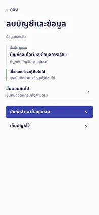
อ่านผลกระทบก่อนตัดสินใจเก็บบัญชี
เริ่ม บัญชี → ข้อมูลของฉัน → ลบบัญชีและข้อมูล → ขั้นตอนถัดไป → เก็บบัญชีไว้
เห็น “ลบบัญชี” · จบที่ ข้อมูลของฉัน
แยกการเก็บบัญชีจากการส่งคำขอลบและคงทางสำรองข้อมูล
ขนาดอักษรที่ใช้ 13 / 15 / 17 / 22 / 32 px · account_deletion_screenของสะสม · ตรวจเพิ่ม 34 หน้า
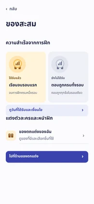
ลองสวมของที่มีแล้วกลับมาดูของสะสม
เริ่ม บัญชี → ของสะสม → ของตกแต่งของฉัน → หมวกนักออกเสียง → ใช้หมวกใบนี้ → กลับไปดูของสะสม
เห็น “ใช้งานอยู่” · จบที่ ของสะสม
แยกของที่มีอยู่กับของในร้านด้วยคำบอกสถานะ
ขนาดอักษรที่ใช้ 13 / 15 / 17 / 20 / 22 / 32 px · achievements_screenตรวจคำก่อนนำเข้า · ตรวจเพิ่ม 34 หน้า
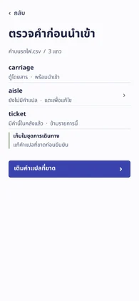
เติมคำแปลที่ขาด นำเข้า แล้วกลับคลัง
เริ่ม คลังคำศัพท์ → เพิ่มคำ → พิมพ์คำศัพท์ → มีหลายคำอยู่ในไฟล์เดียว → aisle → ใช้คำแปลนี้ → เพิ่ม 2 คำเข้าคลัง → ดูคำทั้ง 5 คำ → กลับคลังคำ
เห็น “ทางเดินระหว่างที่นั่ง” · จบที่ คลังคำศัพท์
เพิ่มทางกลับคลังหลังตรวจรายการที่เพิ่มจริง
ขนาดอักษรที่ใช้ 15 / 17 / 22 / 32 px · add_multiple_words_screenเพิ่มคำศัพท์ · ตรวจเพิ่ม 34 หน้า
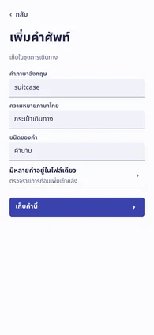
เพิ่ม suitcase และตรวจในชุดเดิม
เริ่ม คลังคำศัพท์ → เพิ่มคำ → พิมพ์คำศัพท์ → เก็บคำนี้ → ดูชุดคำที่อัปเดต → กลับคลังคำ
เห็น “เพิ่งเพิ่ม” · จบที่ คลังคำศัพท์
แยกคำอังกฤษ คำแปล และชุดปลายทางก่อนปุ่มเก็บ
ขนาดอักษรที่ใช้ 15 / 17 / 22 / 32 px · add_vocab_screenถามเรื่องคำนี้ · ตรวจเพิ่ม 34 หน้า
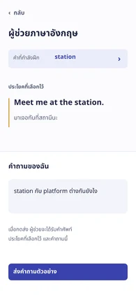
ถามความต่างของสองคำแล้วเปิดชุดเดิม
เริ่ม คลังคำศัพท์ → เปิดชุดการเดินทาง → station → ถามผู้ช่วยเรื่องคำนี้ → ส่งคำถามตัวอย่าง → เปิดคำว่า platform → กลับไปดูชุดคำ
เห็น “platform” · จบที่ การเดินทาง
คงคำและประโยคต้นทางไว้เหนือคำถาม
ขนาดอักษรที่ใช้ 15 / 17 / 20 / 22 / 26 px · ai_tutor_screenการแสดงผล · ตรวจเพิ่ม 34 หน้า
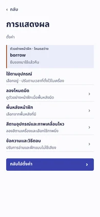
เปรียบเทียบคำเดียวกันในโหมดมืดและสว่าง
เริ่ม บัญชี → ตั้งค่า → การแสดงผล → ลองโหมดมืด → ดูโหมดสว่าง
เห็น “borrow” · จบที่ การแสดงผล
คงคำตัวอย่างเดิมเพื่อให้เทียบความชัดได้
ขนาดอักษรที่ใช้ 13 / 15 / 17 / 22 / 32 px · appearance_settings_screenนึกคำจากเรื่อง · ตรวจเพิ่ม 34 หน้า
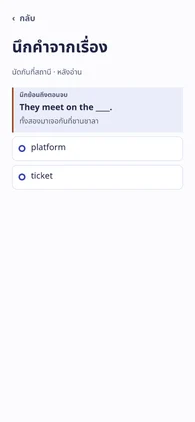
นึกคำแล้วใช้ในประโยคหลังอ่านจบ
เริ่ม ฝึกภาษา → อ่านเรื่องนัดกันที่สถานี → ฝึกคำจากเรื่องนี้ → platform → ดูสรุปการอ่าน → กลับหน้าฝึกภาษา
เห็น “I am on platform three.” · จบที่ ฝึกภาษา
แยกช่วงอ่านเรื่อง นึกคำ และนำไปใช้
ขนาดอักษรที่ใช้ 13 / 15 / 17 / 32 px · associative_reading_session_screenแต่งตัวละคร · ตรวจซ้ำ 14 หน้า
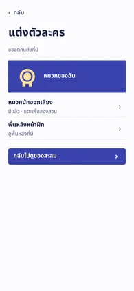
สวมหมวกที่มีแล้วและกลับไปดูของสะสม
เริ่ม บัญชี → ของสะสม → ของตกแต่งของฉัน → หมวกนักออกเสียง → ใช้หมวกใบนี้ → กลับไปดูของสะสม
เห็น “หมวกนักออกเสียง · ใช้งานอยู่” · จบที่ ของสะสม
ตรวจซ้ำกับเส้นทางกลุ่ม 14 หน้า ดูกรณีทางเลือกในทะเบียนรอบก่อน
ขนาดอักษรที่ใช้ 15 / 17 / 22 / 32 px · avatar_equipment_screenด่านสะกดคำ · ตรวจซ้ำ 14 หน้า
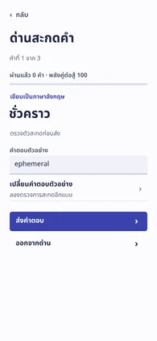
สะกดครบสามคำแล้วเลือกเกมใหม่
เริ่ม ฝึกภาษา → ดูแบบฝึกทั้งหมด → เกมฝึกคำ → ด่านสะกดคำ → ส่งคำตอบ → ส่งคำตอบ → ส่งคำตอบ → เลือกเกมอื่น
เห็น “ผ่านด่านสะกดคำแล้ว” · จบที่ เกมฝึกคำ
ตรวจซ้ำกับเส้นทางกลุ่ม 14 หน้า ดูกรณีทางเลือกในทะเบียนรอบก่อน
ขนาดอักษรที่ใช้ 15 / 17 / 22 / 32 px · boss_battle_screenคลังคำศัพท์ · ตรวจเพิ่ม 34 หน้า
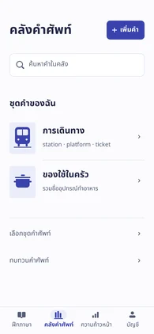
ค้น station แล้วอ่านคำคู่ก่อนกลับคลัง
เริ่ม คลังคำศัพท์ → เปิดชุดการเดินทาง → ค้นหาในชุดนี้ → station → ย้อนกลับ → แสดงทั้งชุด → กลับคลังคำ
เห็น “Meet me at the station.” · จบที่ คลังคำศัพท์
ค้นข้ามชุดได้จากช่องค้นหาหลัก ส่วนการเพิ่มคำทั้งสามวิธีอยู่ที่ปุ่มเดียว
ขนาดอักษรที่ใช้ 15 / 17 / 22 / 32 px · categories_pageนัดกันที่สถานี · ตรวจซ้ำ 14 หน้า
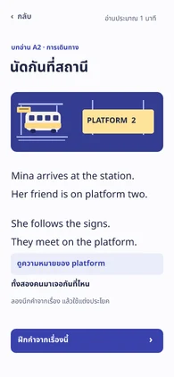
เปิดคำจากบทอ่านแล้วกลับไปอ่านจนจบรอบ
เริ่ม ฝึกภาษา → อ่านเรื่องนัดกันที่สถานี → ดูความหมายของ platform → ดูตัวอย่างการฟังเสียง → กลับไปอ่านต่อ → ฝึกคำจากเรื่องนี้ → platform → ดูสรุปการอ่าน → กลับหน้าฝึกภาษา
เห็น “I am on platform three.” · จบที่ ฝึกภาษา
ตรวจซ้ำกับเส้นทางกลุ่ม 14 หน้า ดูกรณีทางเลือกในทะเบียนรอบก่อน
ขนาดอักษรที่ใช้ 15 / 17 / 22 / 32 px · cefr_article_reader_screenลองตอบก่อนเลือกระดับ · ตรวจซ้ำ 14 หน้า
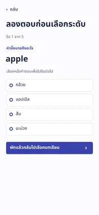
ตอบถูกห้าข้อแล้วเปิดเรื่องที่แนะนำ
เริ่ม ฝึกภาษา → ดูแบบฝึกทั้งหมด → อ่านและแต่งประโยค → ลองตอบก่อนเลือกระดับ → แอปเปิล → Trip → บรรลุเป้าหมาย → ที่นำเสนอสิ่งใหม่ → Present everywhere → ดูบทอ่านที่แนะนำ → เริ่มอ่านเรื่องนี้
เห็น “5 / 5” · จบที่ นัดกันที่สถานี
ตรวจซ้ำกับเส้นทางกลุ่ม 14 หน้า ดูกรณีทางเลือกในทะเบียนรอบก่อน
ขนาดอักษรที่ใช้ 15 / 17 / 22 / 32 px · cefr_diagnostic_test_screenคำศัพท์และบทอ่าน · ตรวจซ้ำ 14 หน้า
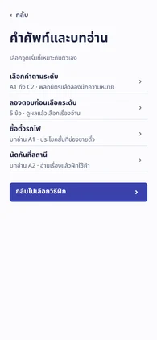
เลือกชุดคำระดับ A2 แล้วทบทวนคำเดิม
เริ่ม ฝึกภาษา → ดูแบบฝึกทั้งหมด → อ่านและแต่งประโยค → เลือกคำตามระดับ → A2 · การเดินทาง → เริ่มทบทวนคำนี้ → พลิกดูความหมาย → จำได้แล้ว → กลับไปดูชุดเดิม → เลือกระดับอื่น → กลับไปเลือกบทเรียน
เห็น “journey · การเดินทาง” · จบที่ คำศัพท์และบทอ่าน
ตรวจซ้ำกับเส้นทางกลุ่ม 14 หน้า ดูกรณีทางเลือกในทะเบียนรอบก่อน
ขนาดอักษรที่ใช้ 15 / 17 / 22 / 32 px · cefr_selection_screenฝึกภาษา · ตรวจเพิ่ม 34 หน้า
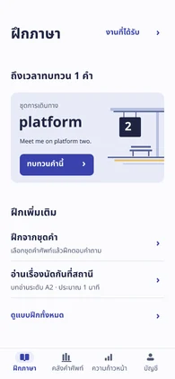
เปิดงานที่ถึงกำหนดแล้วกลับหน้าฝึกภาษา
เริ่ม ฝึกภาษา → ทบทวนคำนี้ → ดูคำแปล → จำได้แล้ว → กลับหน้าฝึกภาษา
เห็น “ทบทวนครบแล้ว” · จบที่ ฝึกภาษา
คำถึงกำหนดเป็นปุ่มหลักเดียวเหนือบทเรียนที่ทำต่อได้
ขนาดอักษรที่ใช้ 13 / 15 / 17 / 20 / 22 / 26 / 32 px · choose_mode_screenกล้องและไมโครโฟน · ตรวจเพิ่ม 34 หน้า
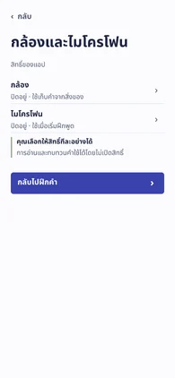
อ่านวิธีใช้ไมค์แล้วกลับศูนย์สิทธิ์
เริ่ม บัญชี → ตั้งค่า → กล้องและไมโครโฟน → ไมโครโฟน → ย้อนกลับ
เห็น “ไมโครโฟน” · จบที่ กล้องและไมโครโฟน
อธิบายว่าใช้สิทธิ์ทำอะไรและฝึกอะไรได้หากไม่เปิด
ขนาดอักษรที่ใช้ 15 / 17 / 22 / 32 px · device_permission_center_screenฟังแล้วเขียน · ตรวจซ้ำ 14 หน้า
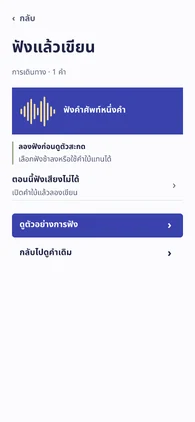
เขียนตามเสียงช้าแล้วกลับคำเดิม
เริ่ม คลังคำศัพท์ → เปิดชุดการเดินทาง → station → ฝึกฟังแล้วเขียน → ดูตัวอย่างการฟัง → ฟังช้าลง → ลองเขียนคำที่ได้ยิน → ตรวจคำตอบ → กลับไปดูคำเดิม
เห็น “สะกดถูกแล้ว” · จบที่ station
ตรวจซ้ำกับเส้นทางกลุ่ม 14 หน้า ดูกรณีทางเลือกในทะเบียนรอบก่อน
ขนาดอักษรที่ใช้ 15 / 17 / 22 / 32 px · dictation_quiz_screenลิงก์หมดอายุแล้ว · ตรวจเพิ่ม 34 หน้า
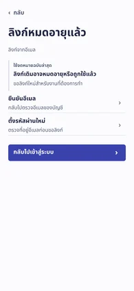
ขอลิงก์ใหม่หลังลิงก์ตั้งรหัสหมดอายุ
เริ่ม บัญชี → เข้าสู่ระบบหรือสร้างบัญชี → ลืมรหัสผ่าน → ขอลิงก์ใหม่ในตัวอย่าง → ลิงก์หมดอายุ → ตั้งรหัสผ่านใหม่ → ขอลิงก์ใหม่ในตัวอย่าง → กลับไปเข้าสู่ระบบ
เห็น “เปิดจดหมายฉบับล่าสุด” · จบที่ เข้าสู่ระบบ
เพิ่มผลหลังขอลิงก์ใหม่และบอกว่าไม่มีการส่งอีเมลจริง
ขนาดอักษรที่ใช้ 13 / 15 / 17 / 22 / 32 px · email_action_screenบันทึกสำเนาข้อมูล · ตรวจเพิ่ม 34 หน้า
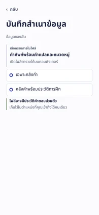
ตรวจตัวอย่างสำเนาคลังคำโดยไม่รวมประวัติ
เริ่ม บัญชี → ข้อมูลของฉัน → บันทึกสำเนาข้อมูล → เฉพาะคลังคำ → ดูตัวอย่างสำเนา → กลับไปข้อมูลของฉัน
เห็น “station,สถานี” · จบที่ ข้อมูลของฉัน
แยกเลือกขอบเขต ตรวจตัวอย่าง และกลับไปจัดการข้อมูล
ขนาดอักษรที่ใช้ 13 / 15 / 17 / 32 px · export_center_screenเติมคำในประโยค · ตรวจเพิ่ม 34 หน้า
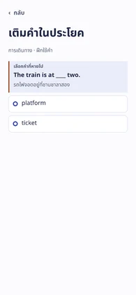
ซ่อมคำที่สับสนด้วยประโยคใหม่
เริ่ม ความก้าวหน้า → คำที่ยังสับสน → ลองเติมคำนี้ในประโยค → platform → กลับหน้าฝึกภาษา
เห็น “The train is at platform two.” · จบที่ ฝึกภาษา
คงบริบทประโยคให้ตรวจได้หลังเติมคำ
ขนาดอักษรที่ใช้ 13 / 15 / 17 / 32 px · fill_in_the_blanks_screenผู้ช่วยฝึกภาษา · ตรวจเพิ่ม 34 หน้า
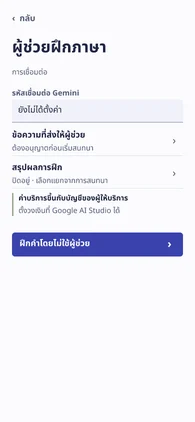
ตรวจว่าข้อมูลใดส่งให้ผู้ช่วยแล้วกลับ
เริ่ม บัญชี → ตั้งค่า → ผู้ช่วยฝึกภาษา → ข้อความที่ส่งให้ผู้ช่วย → กลับไปตั้งค่า
เห็น “ผู้ช่วย” · จบที่ ผู้ช่วยฝึกภาษา
ระบุข้อมูลที่เกี่ยวข้องก่อนเข้าสนทนา
ขนาดอักษรที่ใช้ 15 / 17 / 22 / 32 px · gemini_settings_screenท้าสถิติของฉัน · ตรวจเพิ่ม 34 หน้า
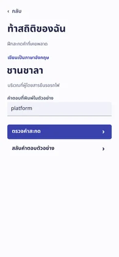
เทียบการสะกดกับรอบก่อนแล้วเลือกเกม
เริ่ม ฝึกภาษา → ดูแบบฝึกทั้งหมด → เกมฝึกคำ → ท้าสถิติของฉัน → ตรวจคำสะกด → กลับไปเลือกเกม
เห็น “ครั้งก่อน 0 จาก 1 คำ” · จบที่ เกมฝึกคำ
เพิ่มทางกลับเกมหลังเทียบผลกับตัวเอง
ขนาดอักษรที่ใช้ 15 / 17 / 22 / 32 px · ghost_shadow_duel_screenเลือกคำตามระดับ · ตรวจซ้ำ 14 หน้า
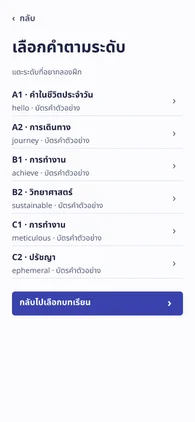
เลือกคำระดับ C2 และกลับสู่รายการระดับ
เริ่ม ฝึกภาษา → ดูแบบฝึกทั้งหมด → อ่านและแต่งประโยค → เลือกคำตามระดับ → C2 · ปรัชญา → เริ่มทบทวนคำนี้ → พลิกดูความหมาย → จำได้แล้ว → กลับไปดูชุดเดิม → เลือกระดับอื่น
เห็น “ephemeral · ชั่วคราว” · จบที่ เลือกคำตามระดับ
ตรวจซ้ำกับเส้นทางกลุ่ม 14 หน้า ดูกรณีทางเลือกในทะเบียนรอบก่อน
ขนาดอักษรที่ใช้ 15 / 17 / 22 / 32 px · learning_world_map_screenเข้าสู่ระบบ · ตรวจเพิ่ม 34 หน้า
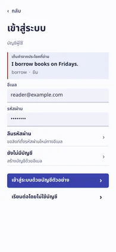
เข้าบัญชีตัวอย่างแล้วไปเรียน
เริ่ม บัญชี → เข้าสู่ระบบหรือสร้างบัญชี → เข้าสู่ระบบด้วยบัญชีตัวอย่าง → ไปหน้าฝึกภาษา
เห็น “reader@example.com” · จบที่ ฝึกภาษา
แยกเข้าสู่ระบบจากการเรียนแบบไม่ใช้บัญชี
ขนาดอักษรที่ใช้ 13 / 15 / 17 / 22 / 32 px · login_screenเลือกวิธีฝึก · ตรวจเพิ่ม 34 หน้า
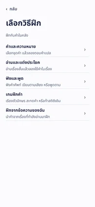
เลือกวิธีฝึกจากงานแล้วกลับไปเลือกวิธีอื่น
เริ่ม ฝึกภาษา → ดูแบบฝึกทั้งหมด → เกมฝึกคำ → เรียงตัวอักษร → t → เลือกเกมอื่น → กลับไปเลือกวิธีฝึก
เห็น “ticket” · จบที่ เลือกวิธีฝึก
แยกฝึกเสียง อ่าน และเล่นเกม แทนรายชื่อโมดูล
ขนาดอักษรที่ใช้ 15 / 17 / 22 / 32 px · main_navigation_screenความก้าวหน้า · ตรวจเพิ่ม 34 หน้า
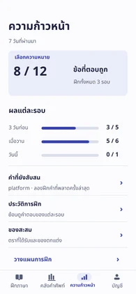
ดูคำที่พลาดแล้วฝึกต่อให้ถูก
เริ่ม ความก้าวหน้า → คำที่ยังสับสน → ลองเติมคำนี้ในประโยค → platform → กลับหน้าฝึกภาษา
เห็น “The train is at platform two.” · จบที่ ฝึกภาษา
ก้าวต่อจากคะแนนรวมลงไปจนถึงคำที่ต้องแก้
ขนาดอักษรที่ใช้ 13 / 15 / 17 / 20 / 22 / 32 / 36 px · mastery_dashboard_screenเก็บคำจากสิ่งรอบตัว · ตรวจเพิ่ม 34 หน้า
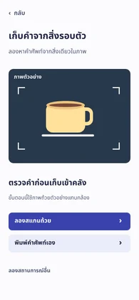
เก็บคำว่า cup สลับแท็บ แล้วกลับมาหาคำจากชุดและการค้นหา
เริ่ม คลังคำศัพท์ → เพิ่มคำ → ถ่ายภาพสิ่งของ → ลองสแกนถ้วย → อนุญาตในตัวอย่างนี้ → ถ่ายภาพตัวอย่าง → เก็บคำว่า cup → เปิดชุดของใช้ในครัว → กลับคลังคำ → ฝึกภาษา → คลังคำศัพท์ → เปิดชุดของใช้ในครัว → cup → กลับคลังคำ → ค้นหาคำในคลัง → ค้นว่า cup → กลับคลังคำ
เห็น “เก็บจากกล้อง · ชุดของใช้ในครัว” · จบที่ คลังคำศัพท์
คำที่เก็บอยู่ในชุดของฉันและค้นได้หลังออกจากหน้ากล้องในรอบนำเสนอเดียวกัน
ขนาดอักษรที่ใช้ 15 / 17 / 22 / 26 px · object_scanner_screenตรวจอีเมลของคุณ · ตรวจเพิ่ม 34 หน้า
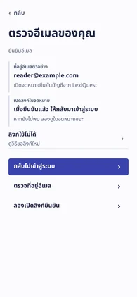
เปิดลิงก์ยืนยันแล้วกลับไปเข้าสู่ระบบ
เริ่ม บัญชี → เข้าสู่ระบบหรือสร้างบัญชี → ยังไม่มีบัญชี → ความเป็นส่วนตัวและเงื่อนไข → ดูขั้นตอนยืนยันอีเมล → ลองเปิดลิงก์ยืนยัน → กลับไปเข้าสู่ระบบ
เห็น “ยืนยันอีเมลแล้ว” · จบที่ เข้าสู่ระบบ
เรียกเมนูตามการยืนยันด้วยอีเมล ไม่ใช้ชื่อไฟล์ OTP
ขนาดอักษรที่ใช้ 13 / 15 / 17 / 22 / 32 px · otp_screenแยกเสียงในคำ · ตรวจซ้ำ 14 หน้า
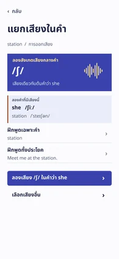
เลือกเสียงต้นคำ she แล้วกลับไปอ่าน station
เริ่ม คลังคำศัพท์ → เปิดชุดการเดินทาง → station → ฟังและฝึกพูด → ลองเสียง /ʃ/ ในคำว่า she → กลับไปดูคำว่า station
เห็น “ห่อริมฝีปากเล็กน้อยแล้วปล่อยลม” · จบที่ station
ตรวจซ้ำกับเส้นทางกลุ่ม 14 หน้า ดูกรณีทางเลือกในทะเบียนรอบก่อน
ขนาดอักษรที่ใช้ 13 / 15 / 17 / 22 / 32 px · phonetic_explorer_screenบัญชี · ตรวจเพิ่ม 34 หน้า
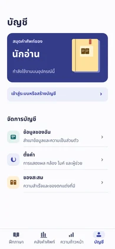
เปิดข้อมูลของฉันแล้วกลับบัญชี
เริ่ม บัญชี → ข้อมูลของฉัน → ย้อนกลับ
เห็น “บันทึกสำเนาข้อมูล” · จบที่ บัญชี
แยกข้อมูลส่วนตัว ตั้งค่า และของสะสมเป็นคนละแถว
ขนาดอักษรที่ใช้ 15 / 17 / 20 / 22 / 32 px · profile_settings_screenเลือกความหมาย · ตรวจเพิ่ม 34 หน้า
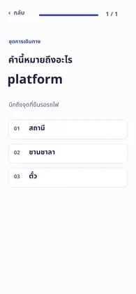
เลือกคำตอบแล้วตรวจผลรอบ
เริ่ม ฝึกภาษา → ฝึกจากชุดคำ → การเดินทาง → ชานชาลา → ดูผลการฝึก → กลับหน้าฝึกภาษา
เห็น “คำตอบที่ถูก” · จบที่ ฝึกภาษา
เก็บตัวเลือกไว้ตอนเฉลยและบอกสถานะบันทึก
ขนาดอักษรที่ใช้ 15 / 17 / 20 / 26 / 36 px · quiz_screenสร้างบัญชี · ตรวจเพิ่ม 34 หน้า
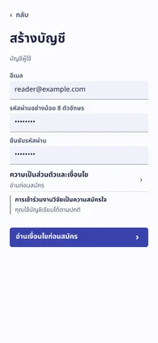
อ่านเงื่อนไข สมัคร และยืนยันอีเมล
เริ่ม บัญชี → เข้าสู่ระบบหรือสร้างบัญชี → ยังไม่มีบัญชี → ความเป็นส่วนตัวและเงื่อนไข → ดูขั้นตอนยืนยันอีเมล → ลองเปิดลิงก์ยืนยัน → กลับไปเข้าสู่ระบบ
เห็น “reader@example.com” · จบที่ เข้าสู่ระบบ
ให้การสมัครจบด้วยผลยืนยัน แยกจากการสมัครวิจัย
ขนาดอักษรที่ใช้ 15 / 17 / 22 / 32 px · register_screenผ่านด่านสะกดคำแล้ว · ตรวจซ้ำ 14 หน้า
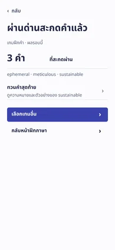
ผ่านด่านแล้วทวนความหมายคำสุดท้าย
เริ่ม ฝึกภาษา → ดูแบบฝึกทั้งหมด → เกมฝึกคำ → ด่านสะกดคำ → ส่งคำตอบ → ส่งคำตอบ → ส่งคำตอบ → ทวนคำสุดท้าย → เลือกเกมอื่น
เห็น “เราต้องการพลังงานที่ยั่งยืน” · จบที่ เกมฝึกคำ
ตรวจซ้ำกับเส้นทางกลุ่ม 14 หน้า ดูกรณีทางเลือกในทะเบียนรอบก่อน
ขนาดอักษรที่ใช้ 15 / 17 / 22 / 32 px · result_screenผลการฝึกครั้งนี้ · ตรวจเพิ่ม 34 หน้า
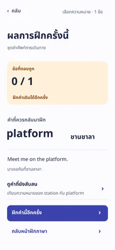
ดูคำที่ผิดแล้วซ่อมด้วยโจทย์ใหม่
เริ่ม ฝึกภาษา → ฝึกจากชุดคำ → การเดินทาง → สถานี → ดูผลการฝึก → ฝึกคำนี้อีกครั้ง → platform → กลับหน้าฝึกภาษา
เห็น “The train is at platform two.” · จบที่ ฝึกภาษา
ปุ่มหลักพาไปใช้คำที่เพิ่งตอบผิดจริง
ขนาดอักษรที่ใช้ 15 / 17 / 22 / 32 / 36 px · score_screenเลือกชุดคำ · ตรวจเพิ่ม 34 หน้า
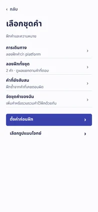
เลือกชุดการเดินทางแล้วฝึกจนจบ
เริ่ม ฝึกภาษา → ฝึกจากชุดคำ → การเดินทาง → ชานชาลา → ดูผลการฝึก → กลับหน้าฝึกภาษา
เห็น “1 / 1” · จบที่ ฝึกภาษา
ให้ชุดคำ/การตั้งค่ารอบมาก่อนวิธีตอบแบบอื่น
ขนาดอักษรที่ใช้ 15 / 17 / 22 / 32 px · select_category_for_quizพื้นหลังหน้าฝึก · ตรวจซ้ำ 14 หน้า
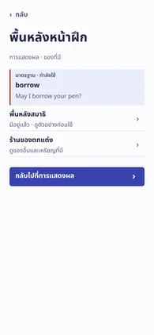
ใช้พื้นหลังที่มีแล้วตรวจพื้นหลังบนหน้าฝึก
เริ่ม บัญชี → ตั้งค่า → การแสดงผล → พื้นหลังหน้าฝึก → พื้นหลังสมาธิ → ใช้พื้นหลังนี้ → กลับไปที่การแสดงผล
เห็น “สมาธิ · กำลังใช้” · จบที่ การแสดงผล
ตรวจซ้ำกับเส้นทางกลุ่ม 14 หน้า ดูกรณีทางเลือกในทะเบียนรอบก่อน
ขนาดอักษรที่ใช้ 13 / 15 / 17 / 22 / 32 px · select_wallpaper_screenเรียงคำให้จบประโยค · ตรวจซ้ำ 14 หน้า
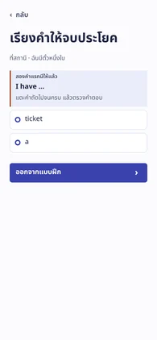
เรียงคำจนครบแล้วตรวจประโยค
เริ่ม ฝึกภาษา → ดูแบบฝึกทั้งหมด → เกมฝึกคำ → เรียงประโยค → a → ticket → ตรวจคำตอบ → เลือกเกมอื่น
เห็น “I have a ticket.” · จบที่ เกมฝึกคำ
ตรวจซ้ำกับเส้นทางกลุ่ม 14 หน้า ดูกรณีทางเลือกในทะเบียนรอบก่อน
ขนาดอักษรที่ใช้ 13 / 15 / 17 / 22 / 32 px · sentence_scramble_screenตั้งค่า · ตรวจเพิ่ม 34 หน้า
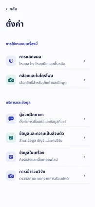
เปรียบเทียบโหมดมืดแล้วกลับตั้งค่า
เริ่ม บัญชี → ตั้งค่า → การแสดงผล → ลองโหมดมืด → ดูโหมดสว่าง → กลับไปตั้งค่า
เห็น “โหมดมืด” · จบที่ ตั้งค่า
แยกการใช้งานบนอุปกรณ์จากบริการและข้อมูล
ขนาดอักษรที่ใช้ 15 / 17 / 22 / 32 px · setting_screenพูดตามประโยค · ตรวจเพิ่ม 34 หน้า
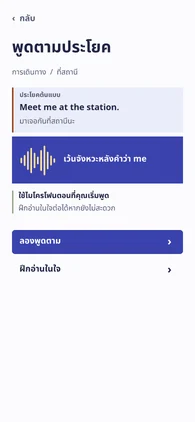
เทียบประโยคที่พูดแล้วกลับไปเลือกแบบฝึกฟัง
เริ่ม ฝึกภาษา → ดูแบบฝึกทั้งหมด → ฟังและพูด → พูดตามประโยค → ลองพูดตาม → หยุดและดูข้อความ → กลับไปเลือกแบบฝึกฟัง
เห็น “Meet me at station.” · จบที่ ฟังและพูด
ให้เห็น the ที่ขาดและมีปุ่มกลับหมวดเสียง
ขนาดอักษรที่ใช้ 13 / 15 / 17 / 22 / 32 px · shadowing_challenge_screenร้านของตกแต่ง · ตรวจเพิ่ม 34 หน้า
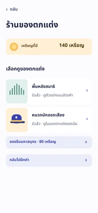
ดูพื้นหลังที่มีแล้วกลับร้านโดยไม่เสียเหรียญ
เริ่ม บัญชี → ของสะสม → ไปที่ร้านของตกแต่ง → พื้นหลังสมาธิ → กลับไปที่ร้าน
เห็น “คุณมีพื้นหลังนี้แล้ว” · จบที่ ร้านของตกแต่ง
แยกของที่มีแล้วจากชิ้นที่ใช้เหรียญแลก
ขนาดอักษรที่ใช้ 15 / 17 / 20 / 22 / 32 px · shop_pageฟังคำในชุด · ตรวจซ้ำ 14 หน้า
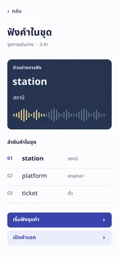
ฟังจนถึงคำสุดท้ายแล้วเปิดชุดเดิม
เริ่ม คลังคำศัพท์ → เปิดชุดการเดินทาง → ฟังคำในชุดนี้ → เริ่มฟังชุดคำ → platform → ticket → จบการฟังชุดนี้ → กลับไปดูชุดการเดินทาง
เห็น “station · platform · ticket” · จบที่ การเดินทาง
ตรวจซ้ำกับเส้นทางกลุ่ม 14 หน้า ดูกรณีทางเลือกในทะเบียนรอบก่อน
ขนาดอักษรที่ใช้ 15 / 17 / 20 / 32 px · smart_audio_playlist_screenฝึกจากข้อความ · ตรวจเพิ่ม 34 หน้า
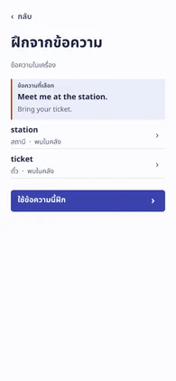
อ่านคำจากข้อความแล้วกลับข้อความเดิม
เริ่ม ฝึกภาษา → ดูแบบฝึกทั้งหมด → ฝึกจากข้อความของฉัน → ticket → ย้อนกลับ
เห็น “ticket” · จบที่ ฝึกจากข้อความ
ให้ประโยคที่นำคำมาอยู่ก่อนเมนูแบบฝึก
ขนาดอักษรที่ใช้ 13 / 15 / 17 / 22 / 32 px · source_practice_screenลองพูดคำนี้ · ตรวจเพิ่ม 34 หน้า
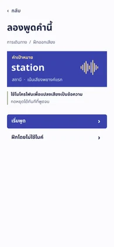
ลองพูด ตรวจคำที่ได้ยิน แล้วเปิดคำเดิม
เริ่ม ฝึกภาษา → ดูแบบฝึกทั้งหมด → ฝึกจากข้อความของฉัน → ใช้ข้อความนี้ฝึก → พูดคำศัพท์ → เริ่มพูด → หยุดและดูข้อความ → ตรงแล้ว กลับไปดูคำ
เห็น “ตรงกับคำเป้าหมาย” · จบที่ station
แสดงคำที่เครื่องได้ยินให้ผู้เรียนยอมรับหรือพูดใหม่
ขนาดอักษรที่ใช้ 15 / 17 / 22 / 32 px · speak_to_text_screenทบทวนคำ · ตรวจเพิ่ม 34 หน้า
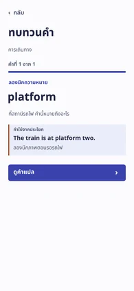
นึกก่อนพลิกบัตรแล้วจบรอบ
เริ่ม ฝึกภาษา → ทบทวนคำนี้ → ดูคำแปล → จำได้แล้ว → กลับหน้าฝึกภาษา
เห็น “ทบทวนครบแล้ว” · จบที่ ฝึกภาษา
แยกการเห็นคำเฉลยออกจากการประเมินว่าจำได้
ขนาดอักษรที่ใช้ 13 / 15 / 17 / 22 / 32 px · srs_flashcards_screenอ่านกราฟตัวอย่าง · ตรวจซ้ำ 14 หน้า
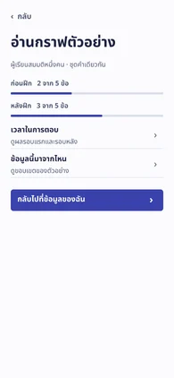
อ่านผลก่อนและหลังฝึกแล้วกลับข้อมูลของฉัน
เริ่ม บัญชี → ข้อมูลของฉัน → ข้อมูลสำหรับงานวิจัย → เวลาในการตอบ → กลับไปที่ข้อมูลของฉัน
เห็น “2.4 วินาที → 1.6 วินาที” · จบที่ ข้อมูลของฉัน
ตรวจซ้ำกับเส้นทางกลุ่ม 14 หน้า ดูกรณีทางเลือกในทะเบียนรอบก่อน
ขนาดอักษรที่ใช้ 15 / 17 / 22 / 32 px · thesis_chart_screenการเดินทาง · ตรวจเพิ่ม 34 หน้า
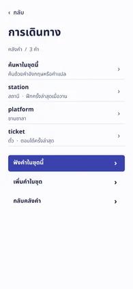
อ่านคำที่สับสนแล้วกลับชุดการเดินทาง
เริ่ม คลังคำศัพท์ → เปิดชุดการเดินทาง → platform → กลับไปดูชุดคำ
เห็น “ชานชาลา” · จบที่ การเดินทาง
ตกลงชื่อชุดและจำนวนคำก่อนแสดงรายการกับคำสั่ง
ขนาดอักษรที่ใช้ 15 / 17 / 22 / 32 px · vocab_list_screenคำที่ยังสับสน · ตรวจเพิ่ม 34 หน้า
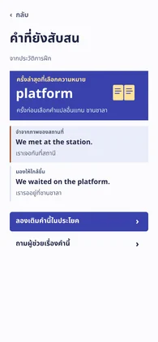
แก้ platform ที่จำสลับกับ station
เริ่ม ความก้าวหน้า → คำที่ยังสับสน → ลองเติมคำนี้ในประโยค → platform → กลับหน้าฝึกภาษา
เห็น “The train is at platform two.” · จบที่ ฝึกภาษา
ใช้คำตอบจากรอบก่อนอธิบายเหตุผลที่ต้องฝึกซ้ำ
ขนาดอักษรที่ใช้ 13 / 15 / 17 / 22 / 32 px · weakness_clinic_screenเรียงตัวอักษร · ตรวจเพิ่ม 34 หน้า
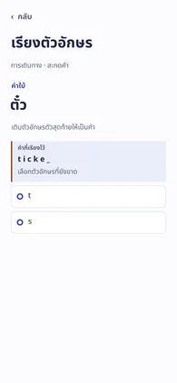
เติมตัวอักษรตัวสุดท้ายแล้วกลับไปเลือกเกม
เริ่ม ฝึกภาษา → ดูแบบฝึกทั้งหมด → เกมฝึกคำ → เรียงตัวอักษร → t → เลือกเกมอื่น
เห็น “ticket” · จบที่ เกมฝึกคำ
แสดงตัวอักษรที่ประกอบแล้วก่อนให้เลือกชิ้นถัดไป
ขนาดอักษรที่ใช้ 13 / 15 / 17 / 32 px · word_scramble_screenนำเข้าชุดคำ · ตรวจซ้ำ 14 หน้า
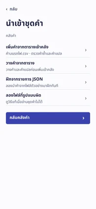
นำเข้าคำมาฝึกแล้วเปิดคำแปลทั้งสองคำ
เริ่ม คลังคำศัพท์ → เพิ่มคำ → นำเข้าจากไฟล์ → ฝึกจากรายการ JSON → อ่านรายการคำ → ฝึกสองคำนี้ → เปิดคำแปล → จำได้แล้ว → เปิดคำแปล → จำได้แล้ว → กลับคลังคำ
เห็น “wallet · กระเป๋าสตางค์” · จบที่ คลังคำศัพท์
ตรวจซ้ำกับเส้นทางกลุ่ม 14 หน้า ดูกรณีทางเลือกในทะเบียนรอบก่อน
ขนาดอักษรที่ใช้ 15 / 17 / 22 / 32 px · wordbook_import_screenดาวน์โหลดผลรายหน้า · ทะเบียน 64 ชุดงานและ 14 หน้าเดิม